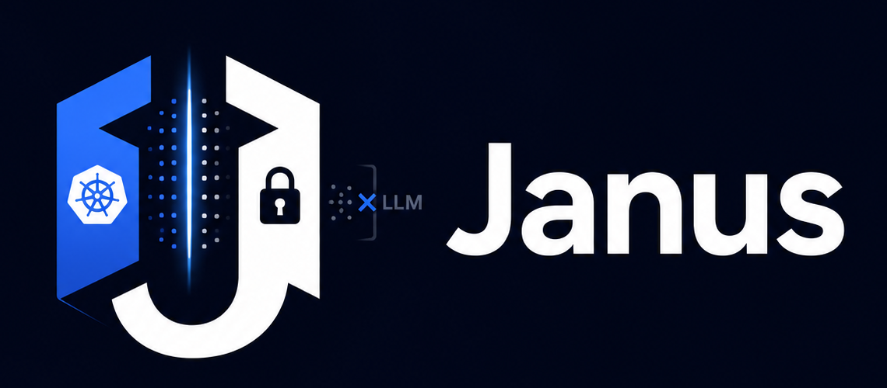
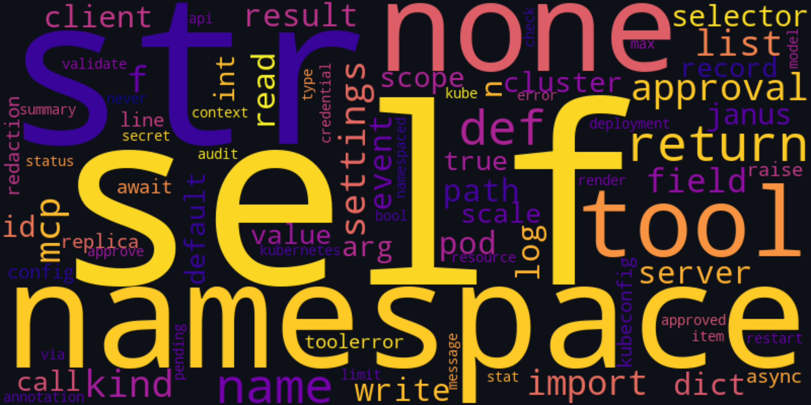

Tools, not text dumps
Janus exposes MCP tools — get_pods, describe_resource, get_events — that the model calls. It never hands over raw cluster state.
Two faces. One cluster. No exposed keys.
Janus is a local MCP server that gives AI assistants scoped, redacted access to your
Kubernetes clusters. Your KUBECONFIG
never leaves the process — no token, certificate, or API‑server URL ever reaches the model.

$ uv tool install janus-mcp-server $ claude mcp add kubernetes -- uvx janus-mcp-server serve ✓ kubernetes registered $ janus-mcp serve ! context pinned · scope: ["payments"] · read-only # KUBECONFIG stays in-process. The model never sees it.
The problem
Janus gives you a third path: keep the credentials on your machine, and let the model work with sanitised, high‑level cluster information only.
LLMs are remarkably useful for debugging, operating, and reasoning about Kubernetes. But sending a KUBECONFIG to an external API hands over a token, a certificate, and your API‑server URL — for most organisations, a non‑starter.
Self‑hosting a model helps, but not everyone can or wants to run frontier‑grade LLMs locally. Janus keeps your credentials on‑prem (or on your laptop) and exposes the cluster to the model through carefully‑scoped tools instead of raw state.
Named after the Roman god of gateways — who famously looks both ways at once — Janus faces the LLM with clean, declarative tool definitions, and faces your cluster with full access, while ensuring the two never meet inappropriately.
How it works
Every response from the Kubernetes API runs the same pipeline before the model sees a single byte.
Janus exposes MCP tools — get_pods, describe_resource, get_events — that the model calls. It never hands over raw cluster state.
Every API response is sanitised. Secrets, tokens, env‑var values, and sensitive metadata are stripped before the LLM ever sees them.
Reads are instant. Destructive actions — restart, scale — require an explicit out‑of‑model confirmation. The LLM proposes; a human pulls the trigger.
Lock Janus to a specific context, namespace set, or subset of resources — an extra safety net beyond whatever your KUBECONFIG already permits.
Features
Not a filter you trust — an architecture where credentials and the model never share a frame.
Your KUBECONFIG never leaves the process running Janus. No token, cert, or API URL is reachable by the model.
Pods, events, logs, deployments, namespaces, and cluster summaries — everything you need to reason about health.
Rollout restart, scale, and more — each gated by a human‑in‑the‑loop approval that binds to the exact arguments.
A three‑layer structural, pattern, and entropy scrub with sensible defaults — extend it with your own patterns.
The get_cluster_summary tool, plus a pinnable cluster://summary resource — context without a flurry of calls.
Claude Code, Claude Desktop, VS Code / Copilot, Codex CLI, Cursor — or your own agent loop over stdio.
The redaction pipeline
Rendering fails closed: if any stage can’t finish cleanly, the model gets a generic error — never a partially‑redacted payload.

Quick start
The shortest path to asking an AI assistant about your cluster — with the credentials never leaving your machine.
Grab the janus-mcp CLI from PyPI, or run it one‑shot with uvx.
Pin one kubeconfig context and list the namespaces it may touch. Unknown keys fail at startup.
Add it to your MCP client. Recipes for Claude, VS Code, Codex, and Cursor ship in the guide.
“Why are pods crashing in the prod namespace?” — Janus fetches, sanitises, and the model explains.
# 1. install the CLI (or use `uvx janus-mcp-server serve` directly) uv tool install janus-mcp-server # 2. configure: pin a context + allowed namespaces mkdir -p ~/.config/janus-mcp cp examples/config.yaml ~/.config/janus-mcp/config.yaml $EDITOR ~/.config/janus-mcp/config.yaml # 3. register with Claude Code claude mcp add kubernetes -- uvx janus-mcp-server serve
Registration recipes for Claude Desktop, VS Code / Copilot, Codex CLI, and Cursor are in the quick start guide. Managed clusters (EKS / GKE / AKS) work out of the box — auth is whatever your kubeconfig says.
Documentation
Janus is in active development. The security model is documented, tested, and verified in CI.
Zero to a safe cluster copilot, with client registration recipes for every major MCP host.
Install, least‑privilege RBAC, the approvals workflow, the audit log, and troubleshooting.
The five security invariants — and exactly how CI verifies that no canary ever reaches the model.
Run it locally, scope it tightly, and let the model help. The credentials stay yours.